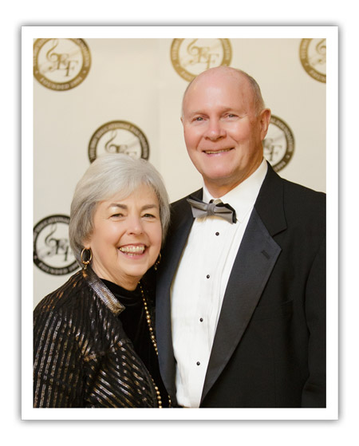

Executive Director
Martha Herring Stubbs
Martha Herring Stubbs is a native of Calvary, Georgia and came to Tallahassee in 1970.
Mrs. Stubbs is the Executive Director of Stubbs’ Educational Foundation, whose purpose is to provide music scholarships for K -12 students in North Florida and South Georgia. The Foundation’s purpose is to raise money for scholarships to enable less fortunate but musically gifted students of all races and backgrounds to study music. Since being founded in 1995, the Foundation has provided 786 scholarships to need based and merit based students in the amount of $678,255.00 and Tallahassee Community College scholarships, and has established 29 permanent endowments of $20,000.
In the summer of 1968 Martha Stubbs founded Stubbs’ School of Music in Tuscaloosa, Alabama . In summer of 1970 Ron and Martha moved to Tallahassee and she continued to teach piano as Stubbs’ School of Music. In 1984 Stubbs’ Music Center was established a comprehensive music center for instruction, music theory, and performance for teachers and students. The center maintained a faculty of twenty, which offered private and group instruction to over 400 students of all ages in all instruments and voice each week. Mrs. Stubbs received her Bachelor of Music degree from Wesleyan College in church music with a major in organ and a minor in piano. She is a member the Florida State Music Teachers’ Association in which she has served as President and Florida State Music Teachers’ Foundation President as well as many other positions. During her years as a member of the Tallahassee Music Teachers’ Association she held every office except treasurer and chaired all committees at least once. She was also active in the National Piano Guild and Music Federation. From 1990 through 2002 Martha was a member of the Technology Team for the Music Teachers’ National Association. The Technology Team provided five days of music workshops at the national conference each year. She has held every office in the local and district FSMTA associations. She has been a contributing author for “The Music and Computer Educator” and “American Music Teacher” magazines. In addition to giving music workshops across the country, she is also an adjudicator for many music contest and evaluations. After 46 years of teaching piano Martha retired in June 2014. She is still active within the musical community and is concentrating on empowering youth in our community through music education. She will remain the Executive Director of Stubbs’ Educational Foundation.
The Tallahassee community continues to be blessed with Stubbs’ Music Center continuing under the leadership of Sarah and KC Brown. They have expanded the Arts to include dance. In the fall of 2017 the Browns purchased Stubbs’ Music Center and it became Timberlane Arts and Dance Academy(TADA). Professional training in the art forms of music and dance will continue for years to come.
Mrs. Stubbs served as the Executive Director of “The Arts at Good Samaritan” from August 2008 – May 2012. The Arts is an outreach ministry of Good Samaritan United Methodist Church in Tallahassee with programs in music and dance.
In July 2009 Mrs. Stubbs partnered with another musician to develop “Jingle Jam, Inc”. “Jingle Jam” is a musical education program for 8 months through five years olds that takes place within the preschool settings. In January 2015 she sold Jingle Jam, Inc to Sarah and KC Brown of Tallahassee.
In addition to her musical life, Mrs. Stubbs is active within her community as a member of the Killearn United Methodist Women in which she held most offices including a two year term as President, and a member of the Tallahassee Junior League. Between 1975 and 1992 she was a volunteer in her children’s schools and the Tallahassee Youth Orchestra. During these years Martha also was a member of Tallahassee Opera Guild, the Tallahassee Youth Orchestra, Tallahassee Garden Club, and Springtime Tallahassee.
Mrs. Stubbs has received numerous awards and recognition for her dedication to helping others through music education. In 1999 she was honored by Wesleyan College as a “Distinguished Alumni for Service” within her community, one of 19 nominees for Leadership Tallahassee “Leader of the Year”, Woman of the Year in Arts for Leon County, and the Mayor for Tallahassee recognized her contributions to the City of Tallahassee by proclaiming June 23rd as “Martha Stubbs’ Day”. During the 2004 Women’s History Month at Tallahassee Community College Mrs. Stubbs was presented an award as one of the ten Honorees for “Women who Inspire Hope & Possibility”. In 2006 she was recognized as a MTNA Fellow at the Music Teachers’ National Conference in Austin, Texas. In March of 2008 Mrs. Stubbs was honored by the “Tallahassee Democrat” as being on of the “25 Women You Need to Know in Tallahassee”. In 2010 Rotary Clubs of Tallahassee, Wakulla, & Monticello recognized Mrs. Stubbs as a nominee for the “Ethics In Business Award”.
Mrs. Stubbs is married to Ron Stubbs for 49 years. They have two adult children, Chuck and MaryGrace, daughter in law – Joy and two grandchildren Charlie and Mary Harlen.